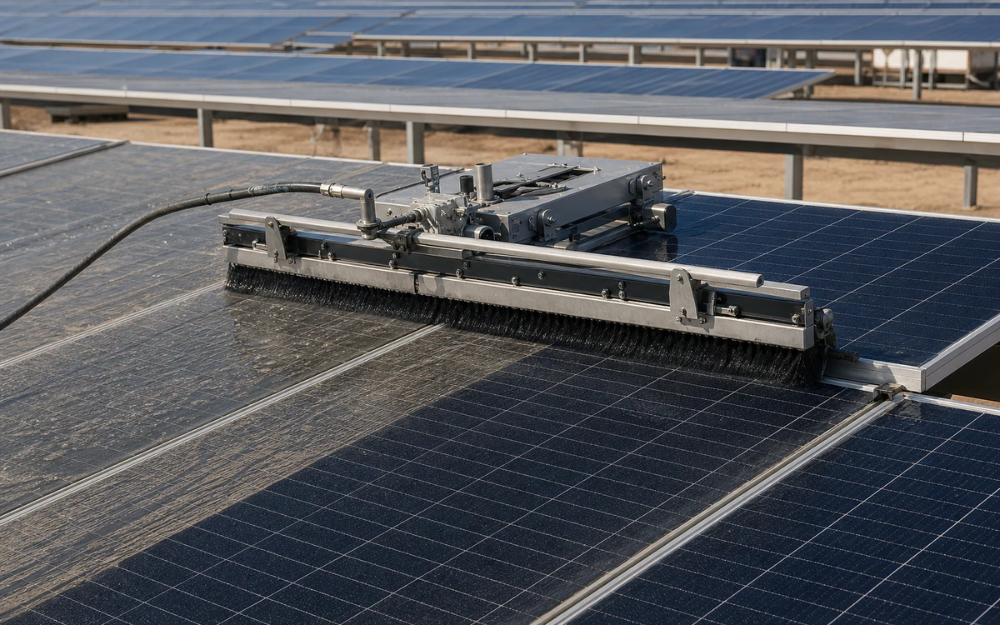
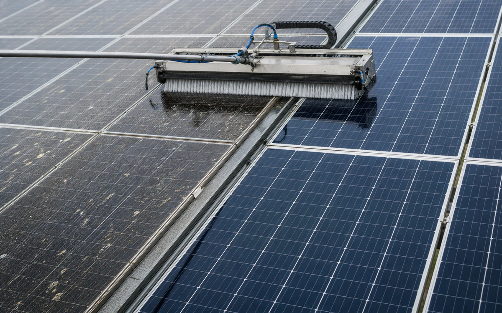

Industries › Solar Farms & Panel Cleaning
Solar soft-wash chemistry needs a runoff and coating story.
Soft-wash at scale without panel damage is the approval problem for solar farms and panel cleaners.
- CleanModule glass, frames, trackers, row hardware, weather stations, and inverter-area hardscape
- RemoveDust, clay, pollen, bird residue, salt, agricultural film, industrial fallout, and mineral spotting
- MethodZone trial, low-mineral rinse, OEM-approved low-residue chemistry where needed, soft agitation, and controlled dry
- BoundaryUse site electrical and tracker procedures, module warranties, work-at-height/vehicle controls, vegetation protection, and weather limits.
- Open task controls and documents
Why VertKleen fits Solar Farms & Panel Cleaning.
Solar farms and panel-cleaning crews need chemistry that supports soft-wash workflows, drone delivery, coating review, runoff control, and vegetation concerns. MultiWash and LAM3 are the core products.
Review field evidence

Recommended
VertKleen products for Solar Farms & Panel Cleaning.
VertKleen options for Solar Farms & Panel Cleaning workflows.
Applications and proof
Clean utility-scale modules by soiling zone while protecting coatings, trackers, electrical gear, and site drainage.
Task controls first. Product choice follows the asset, deposit, materials, operating window, and discharge route.
- Task
- Clean utility-scale modules by soiling zone while protecting coatings, trackers, electrical gear, and site drainage.
- Asset / substrate
- Module glass, frames, trackers, row hardware, weather stations, and inverter-area hardscape
- Soil / deposit
- Dust, clay, pollen, bird residue, salt, agricultural film, industrial fallout, and mineral spotting
- Starting chemistry
- VertKleen MultiWash, VertKleen LAM3
- Concentration
- Start with water; if chemistry is approved, use the weakest current-label dilution that passes module coating and residue checks.
- Process controls
- Log row/zone, glass temperature, irradiance, water conductivity, dilution, dwell, brush pressure, rinse volume, weather, and dry condition.
- Shutdown / containment
- Use site electrical and tracker procedures, module warranties, work-at-height/vehicle controls, vegetation protection, and weather limits.
- Verification endpoint
- Spot-free dry inspection, no scratches/coating change, repeatable images, and normalized soiling or power trend against an untreated control.
Controlled downloads
Review the current safety and application file.
Confirm revision, product identity, material compatibility, and application scope before site approval.
VertKleen MultiWash — Safety Data Sheet (SDS)MAS-VK-MULTIWASH-SDS · Rev 1.0 · Distribution: Current · Claims: No automated flags · SKUs: VK-MW
VertKleen MultiWash — Technical Data Sheet (TDS)MAS-VK-MULTIWASH-TDS · Rev 1.0 · Distribution: Current · Claims: Review required · SKUs: VK-MW
VertKleen MultiWash — Product LabelMAS-VK-MULTIWASH-LABEL · Rev 1.0 · Distribution: Current · Claims: Review required · SKUs: VK-MW
VertKleen LAM3 — Safety Data Sheet (SDS)MAS-VK-LAM3-SDS · Rev 1.0 · Distribution: Current · Claims: No automated flags · SKUs: VK-LAM3
VertKleen LAM3 — Technical Data Sheet (TDS)MAS-VK-LAM3-TDS · Rev 1.0 · Distribution: Current · Claims: Review required · SKUs: VK-LAM3
VertKleen LAM3 — Product Label (Front)MAS-VK-LAM3-LABEL-FRONT · Rev 1.0 · Distribution: Current · Claims: No automated flags · SKUs: VK-LAM3
Scope the job
Bring us your Solar Farms & Panel Cleaning cleaning task.
The request opens with asset, soil, operating conditions, materials, wastewater route, and buying deadline already prompted.